From content expertise to student-centered assessment, this domain captures how I planned, resourced, and designed the Julius Caesar unit for three sections of Honors and Advanced English 10 at Chartiers Valley High School.
Component Highlights
A station-based Leadership Evaluation Lab that moved students from plot recall into deep rhetorical analysis of Julius Caesar characters.
A Reader's Theater sign-up system that gave students choice, reduced anxiety around Shakespeare, and respected individual comfort levels.
Student-friendly learning goals written with measurable action verbs — connecting daily objectives to the unit's essential question.
Differentiated text selection — original Shakespeare for Honors, No Fear Shakespeare for Advanced — preserving rigor for both groups.
Two versions of a Brutus and Antony funeral speech close reading — one independent, one scaffolded — with the same core learning goals.
A culminating Leadership Philosophy Portfolio in which students built their own argument about what makes a great leader.
For the Julius Caesar unit, I fully designed a station-based Leadership Evaluation Lab for Honors English 10. Students were placed in strategic groups and rotated around the room to different character stations: Brutus, Cassius, Caesar, Antony, and others.
At each station, students examined a selected excerpt, reviewed the context of the passage, and answered analysis questions about the character's leadership, language, motivation, and influence. Using textual evidence, students evaluated how each character connected to the unit's essential question: What makes a great leader?
This activity pushed students beyond plot review and into deeper analysis of rhetoric, character development, and theme, demonstrating how content knowledge and pedagogical design work together to create meaningful learning.
Full lesson plan for the Leadership Evaluation Lab, including station prompts, annotation protocols, and grouping rationale available here.
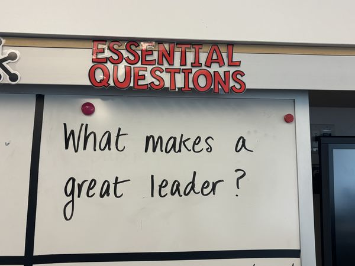
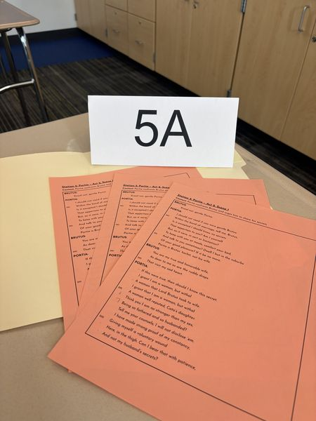
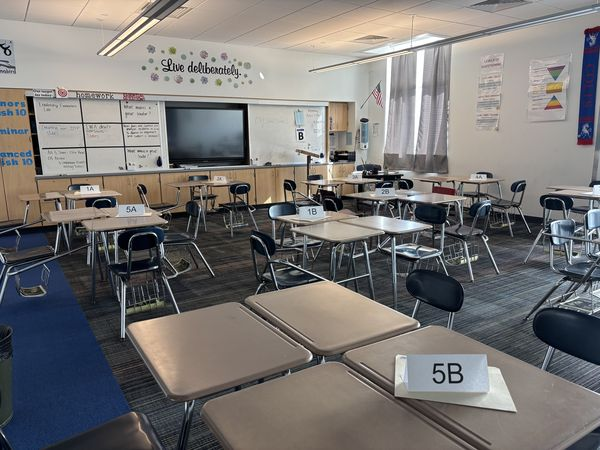
Click or tap any image to enlarge
Reading Shakespeare aloud can feel genuinely intimidating, especially for students who are less confident readers or who don't enjoy speaking in front of the class. I recognized this early and designed a Reader's Theater sign-up system to address it.
Before reading each scene, students signed up for specific speaking roles, choosing parts that matched their comfort level, reading confidence, and willingness to perform. This created a predictable routine that encouraged participation while respecting individual needs, personalities, and comfort levels.
By giving students agency in the process, I was able to maintain engagement and create a classroom culture where students felt safe taking risks with the text.
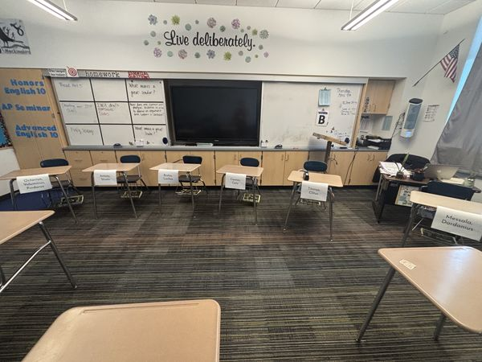
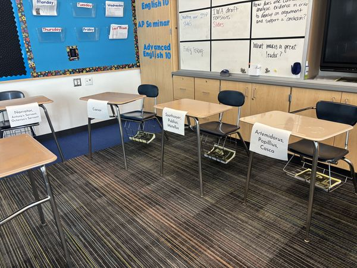
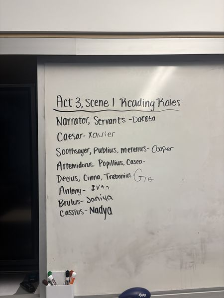
Click or tap any image to enlarge
I intentionally wrote each lesson objective in clear, student-friendly language so students knew exactly what they were expected to learn and accomplish by the end of class. Every objective was specific and measurable, using action verbs such as identify, analyze, explain, apply, and write.
Learning goals were displayed at the start of every lesson and connected back to the unit's essential question: What makes a great leader? This helped students understand the purpose of the lesson and allowed me to align instruction, activities, and assessment with the intended outcomes in a coherent, transparent way.
Analyze key passages from Julius Caesar by identifying character decisions and context · Explain how characters use rhetorical strategies to influence others · Identify and cite text evidence that demonstrates rhetorical choices · Begin synthesizing ideas across characters in preparation for the leadership portfolio.
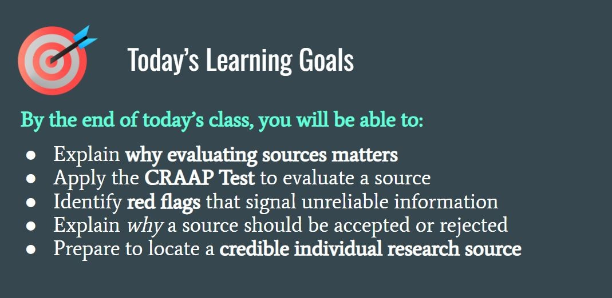
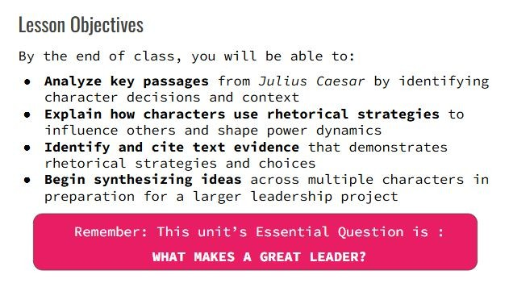
Click or tap any image to enlarge
Both Honors and Advanced English 10 students studied the same play and worked toward similar analytical goals, but the resource selection was intentionally differentiated. Honors students read the original Shakespearean language, while Advanced students used the No Fear Shakespeare modern translation.
This choice allowed Honors students to engage directly with Shakespeare's complex diction, syntax, and rhetorical structure, while Advanced students were able to access the same plot, characters, themes, and rhetorical concepts through a more readable version. The rigor of the unit was preserved for both groups; what changed was the access point.
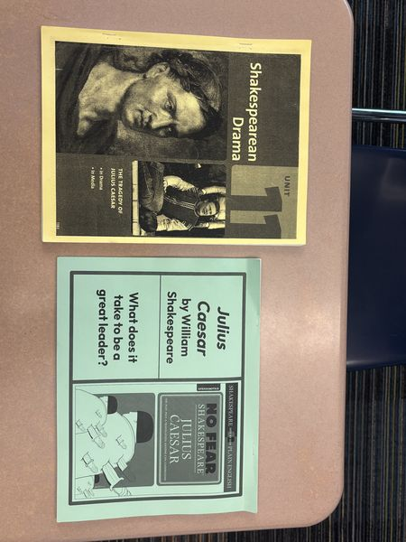
Click or tap any image to enlarge
Both Honors and Advanced English 10 students completed a close reading of Brutus and Antony's funeral speeches from Julius Caesar, focusing on diction, rhetorical devices, evidence, and the effect of language on the crowd. The core learning goals were identical, but the execution was differentiated.
The Honors version was designed for independence: students followed an annotation protocol and were expected to identify patterns in the text, label rhetorical strategies, and determine the purpose or effect of language on their own. The Advanced version included guided questions in the right-hand column to direct students' attention to specific moments.
This differentiation demonstrates the ability to scaffold instruction without lowering expectations. This allowed both groups to practice rhetorical analysis at an appropriate level of challenge.
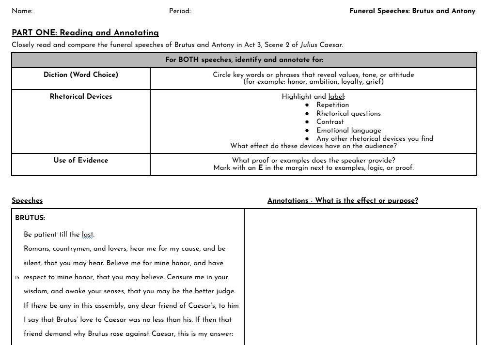
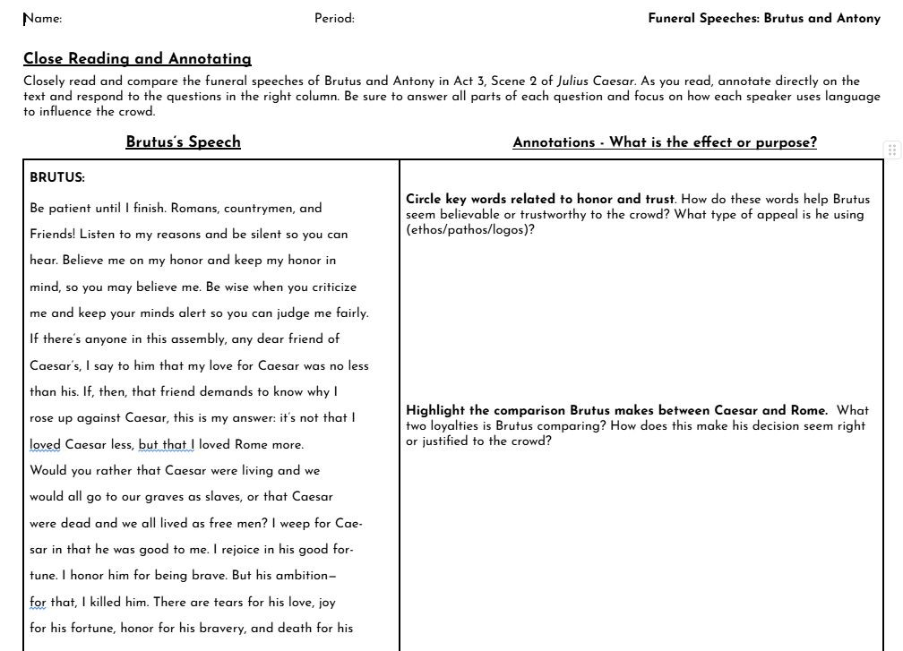
Click or tap any image to enlarge
The culminating assessment for the Julius Caesar unit was a Leadership Philosophy Portfolio, completed in Google Slides. Students used the play as a case study to develop their own original argument about the essential question: What makes a great leader?
In the portfolio, students analyzed three characters using embedded textual evidence, discussed rhetorical strategies, and evaluated each character's leadership effectiveness. They also synthesized one nonfiction article, made a modern-world connection, and completed a Works Cited slide in MLA format.
Students were assessed using a detailed grading rubric that evaluated the quality of their claims, their use of evidence, their rhetorical analysis, and the clarity of their writing. The portfolio format allowed students to demonstrate both analytical and creative thinking in a way that a traditional test cannot.
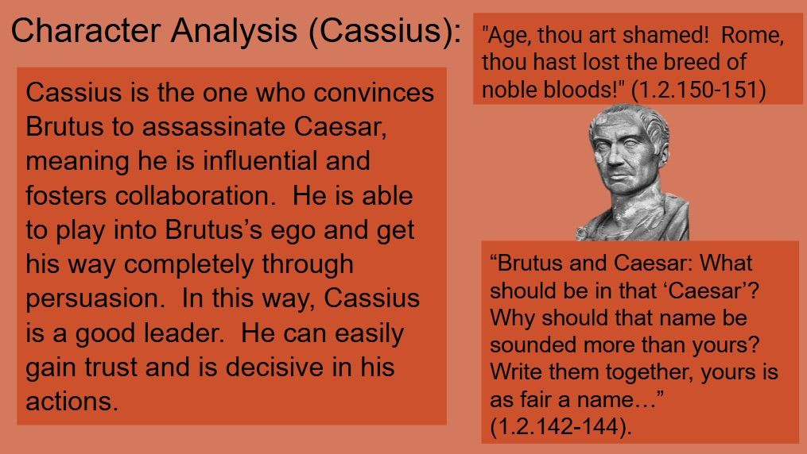
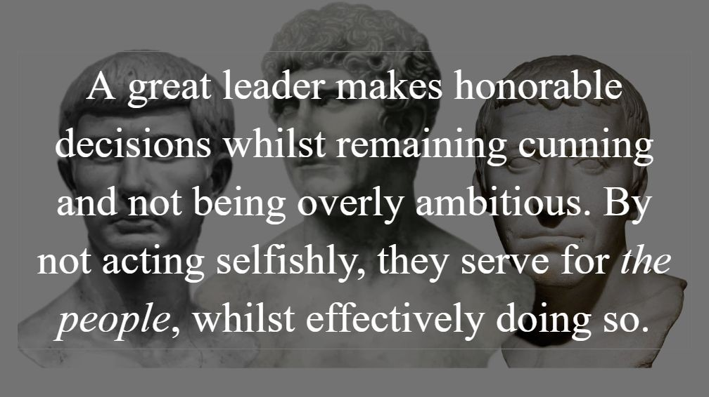
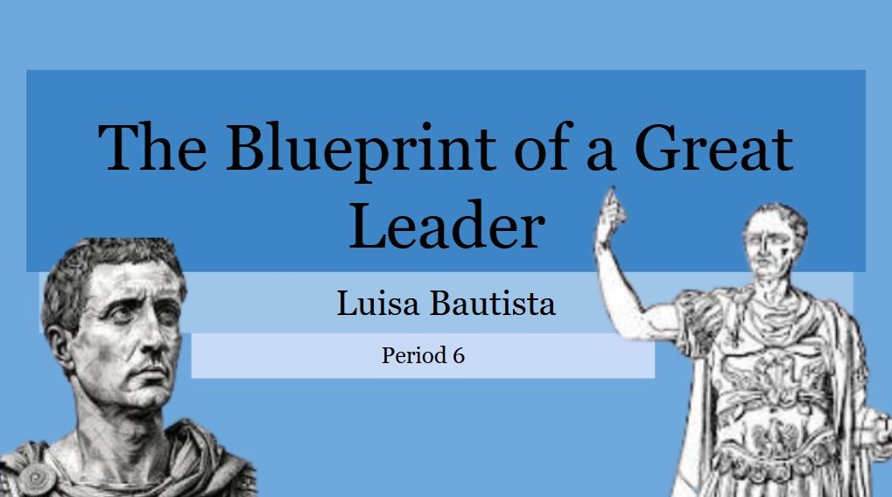
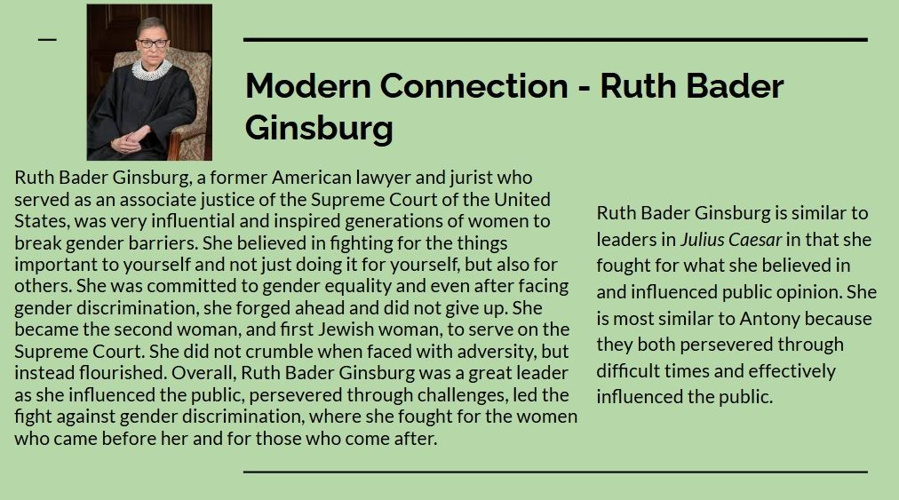
Click or tap any image to enlarge